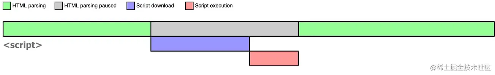

script 元素有以下8个属性:
src 可选。表示包含要执行的外部文件代码地址。
charset 可选。指定src属性引入的脚本代码的字符集。
async 可选。表示立即异步下载脚本,但不能阻止其它页面动作。只对外部引入的脚本文件起效。
defer 可选。表示脚本延迟到文档完全被解析之后再执行。只对外部引入的脚本文件起效。
crossorigin 可选。配置网络请求的CORS(跨域资源共享)默认不适用,crossorigin="use-credentials"设置凭据标志使用CORS。
integrity 可选。允许比对接收到的资源和指定的加密签名以验证子资源的完整性。 如果接收到的资源的签名和在这个属性指定的不同,则页面会报错,脚本不执行。可以用来确保内容分发网络(CDN Content Delivery Network)不会提供恶意内容。
language 已废弃不理会不使用。
type 可选。用来代替language,表示代码中脚本语言的内容类型(即MIME类型)。按照惯例这个值始终是"text/javaScript",一般也不用写。另一个值是"module",则代码会被当成ES6的模块。
JavaScript是一门解释型语言,所以代码可以通过 script元素直接嵌在网页(HTML文件)的任何地方。想在HTML中书写JavaScript代码有以下两种方法。
第一种方法:
事件属性,通过GlobalEventHandlers接口提供的网页元素的事件属性(比如onclick和onmouseover),可以写入 JavaScript 代码。 URL 支持javascript:协议,即在 URL 的位置写入代码,使用这个 URL 的时候就会执行 JavaScript 代码。 缺点:逻辑和结构代码写在一起强耦合,不利于后期维护,所以一般实际开发也不怎么用。
第二种方法
就是使用script元素,通过它直接在网页中嵌入行内JavaScript代码,以及通过它在网页中包含外部的JavaScript文件。 注意:script是双标签,浏览器遇到后会从上到下依次自动执行解析代码。标签位置现在通常放在body标签最后面,这样页面会先处理JavaScript代码之前完全渲染页面提供用户体验。
嵌入行内脚本:即直接在script元素之间书写JavaScript代码, 语法 <script> console.log('Hello World');//编写行内JavaScript代码的地方 </script> 缺点:这时候JavaScript代码依然是在HTML页面中书写的,不过是放到了script元素中所以缺点跟上面的是一样的实际开发也不推荐。
外部脚本:包含外部的JavaScript文件,要使用script元素的src属性指定外部JavaScript文件的地址。 把JavaScript代码抽离到一个单独的 .js文件,然后在HTML中通过<script src="js文件存放路径"></script>引入这个文件。 优点:逻辑代码和结构分离低耦合,把JavaScript代码放入一个单独的.js文件中也更利于维护代码,并且多个页面可以各自引用同一份.js文件,也可以在同一个页面中引入多个.js文件复用性。 同时浏览器会下载它并保存到浏览器的缓存中,这可以节省流量并使得页面加载更快。 注意:如果设置了 src 特性,script 标签内容将会被忽略。
浏览器加载 JavaScript 脚本,主要通过script元素完成。在 HTML 中会遇到以下三类
正常的网页加载流程是这样的:script src='xxx'>/script>
1.浏览器一边下载 HTML 网页,一边开始解析。也就是说,不等到下载完html代码就开始解析并渲染页面了。
2.解析过程中,浏览器遇到一个没有任何属性的 script 标签,就会暂停解析并把网页渲染的控制权转交给 JavaScript 引擎。
3.如果script元素引用了外部脚本,就发送网络请求下载该 JS 脚本然后让 JS 引擎执行该代码,否则就直接执行嵌入的行内代码。
4.JavaScript 引擎执行完毕后,将控制权交还给浏览器渲染引擎,恢复往下解析 HTML 网页。

可以看到,script 阻塞了浏览器对 HTML 的解析,如果获取 JS 脚本的网络请求迟迟得不到响应,或者 JS 脚本执行时间过长,都会导致白屏,用户看不到页面内容。
不正常的情况: 推迟执行脚本,给script元素添加defer属性: script src='xxx' defer>/script> 当浏览器遇到带有 defer 属性的 script 时,获取该脚本的网络请求是异步的,不会阻塞浏览器解析 HTML。 发送的网络请求回来之后,如果此时 HTML 还没有解析完,浏览器不会暂停解析并执行 JS 代码,而是延迟等待到整个页面的 HTML 解析完毕后再执行 JS 代码。 可以看到,这个情况是立即下载但延迟执行也不会阻塞了浏览器对 HTML 的解析。
异步执行脚本,给script元素添加async属性: script src='xxx' async>/script> 当浏览器遇到带有 async 属性的 script 时,请求该脚本的网络请求也是异步的,不会阻塞浏览器解析 HTML。 发送的网络请求回来之后,如果此时 HTML 还没有解析完,浏览器会暂停解析,先让 JS 引擎执行代码,执行完毕后再进行解析。

当然,如果在 JS 脚本请求回来之前,HTML 已经解析完毕了,那就啥事没有,立即执行 JS 代码

所以 async 是不可控的,因为执行时间不确定,你如果在异步 JS 脚本中获取某个 DOM 元素,有可能获取到也有可能获取不到。而且如果存在多个 async 的时候,它们之间的执行顺序也不确定,完全依赖于网络传输结果,谁先到执行谁。
最后,根据上面的分析,不同类型 script 的执行顺序及其是否阻塞解析 HTML 总结如下
noscript元素:用于给不支持JavaScript或禁用JavaScript的浏览器提供替代显示内容,也是一个双标签。 它的内容可以是任何出现在body元素中的 HTML元素,script元素除外。当浏览器不支持脚本或者禁用脚本时就会显示包含在noscript元素中的内容。